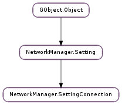

| static | new() |
| add_permission(ptype, pitem, detail) | |
| add_secondary(sec_uuid) | |
| get_autoconnect() | |
| get_connection_type() | |
| get_id() | |
| get_master() | |
| get_num_permissions() | |
| get_num_secondaries() | |
| get_permission(idx, out_ptype, out_pitem, out_detail) | |
| get_read_only() | |
| get_secondary(idx) | |
| get_slave_type() | |
| get_timestamp() | |
| get_uuid() | |
| get_zone() | |
| is_slave_type(type) | |
| permissions_user_allowed(uname) | |
| remove_permission(idx) | |
| remove_secondary(idx) |
| Name | Type | Flags | Description |
|---|---|---|---|
| autoconnect | bool | r/w | If True, NetworkManager will activate this connection when its network resources are available. If False, the connection must be manually activated by the user or some other mechanism. |
| id | str | r/w | User-readable connection identifier/name. Must be one or more characters and may change over the lifetime of the connection if the user decides to rename it. |
| master | str | r/w | Interface name of the master device or UUID of the master connection |
| read-only | bool | r/w | If True, the connection is read-only and cannot be changed by the user or any other mechanism. This is normally set for system connections whose plugin cannot yet write updated connections back out. |
| slave-type | str | r/w | Setting name describing the type of slave this connection is (ie, ‘bond’) or None if this connection is not a slave. |
| timestamp | int | r/w | Timestamp (in seconds since the Unix Epoch) that the connection was last successfully activated. Settings services should update the connection timestamp periodically when the connection is active to ensure that an active connection has the latest timestamp. |
| type | str | r/w | Base type of the connection. For hardware-dependent connections, should contain the setting name of the hardware-type specific setting (ie, ‘802-3-ethernet’ or ‘802-11-wireless’ or ‘bluetooth’, etc), and for non-hardware dependent connections like VPN or otherwise, should contain the setting name of that setting type (ie, ‘vpn’ or ‘bridge’, etc). |
| uuid | str | r/w | Universally unique connection identifier. Must be in the format ‘2815492f-7e56-435e-b2e9-246bd7cdc664’ (ie, contains only hexadecimal characters and ‘-‘). The UUID should be assigned when the connection is created and never changed as long as the connection still applies to the same network. For example, it should not be changed when the user changes the connection’s ‘id’, but should be recreated when the WiFi SSID, mobile broadband network provider, or the connection type changes. |
| zone | str | r/w | The trust level of a the connection.Free form case-insensitive string (for example “Home”, “Work”, “Public”). None or unspecified zone means the connection will be placed in the default zone as defined by the firewall. |
None
| Name | Type | Access |
|---|---|---|
| parent | NetworkManager.Setting | r |
Bases: NetworkManager.Setting
The NetworkManager.SettingConnection struct contains only private data. It should only be accessed through the functions described below.
| Returns: | the new empty NetworkManager.SettingConnection object |
|---|---|
| Return type: | NetworkManager.Setting |
Creates a new NetworkManager.SettingConnection object with default values.
| Parameters: | |
|---|---|
| Returns: | True if the permission was unique and was successfully added to the list, False if ptype or pitem was invalid or it the permission was already present in the list |
| Return type: |
Adds a permission to the connection’s permission list. At this time, only the “user” permission type is supported, and pitem must be a username. See NetworkManager.SettingConnection :permissions: for more details.
| Parameters: | sec_uuid (str) – the secondary connection UUID to add |
|---|---|
| Returns: | True if the secondary connection UUID was added; False if the UUID was already present |
| Return type: | bool |
Adds a new secondary connetion UUID to the setting.
| Returns: | the connection’s autoconnect behavior |
|---|---|
| Return type: | bool |
Returns the NetworkManager.SettingConnection :autoconnect property of the connection.
| Returns: | the connection type |
|---|---|
| Return type: | str |
Returns the NetworkManager.SettingConnection :type property of the connection.
| Returns: | the connection ID |
|---|---|
| Return type: | str |
Returns the NetworkManager.SettingConnection :id property of the connection.
| Returns: | interface name of the master device or UUID of the master connection. |
|---|---|
| Return type: | str |
Returns the NetworkManager.SettingConnection :master property of the connection.
| Returns: | the number of permissions entires |
|---|---|
| Return type: | int |
Returns the number of entires in the NetworkManager.SettingConnection :permissions property of this setting.
| Parameters: |
|
|---|---|
| Returns: | |
| Return type: |
Retrieve one of the entries of the NetworkManager.SettingConnection :permissions property of this setting.
| Returns: | True if the connection is read-only, False if it is not |
|---|---|
| Return type: | bool |
Returns the NetworkManager.SettingConnection :read-only property of the connection.
| Parameters: | idx (int) – the zero-based index of the secondary connection UUID entry |
|---|---|
| Returns: | the secondary connection UUID at index idx |
| Return type: | str |
| Returns: | the type of slave this connection is, if any |
|---|---|
| Return type: | str |
Returns the NetworkManager.SettingConnection :slave-type property of the connection.
| Returns: | the connection’s timestamp |
|---|---|
| Return type: | int |
Returns the NetworkManager.SettingConnection :timestamp property of the connection.
| Returns: | the connection UUID |
|---|---|
| Return type: | str |
Returns the NetworkManager.SettingConnection :uuid property of the connection.
| Returns: | the trust level of a connection |
|---|---|
| Return type: | str |
Returns the NetworkManager.SettingConnection :zone property of the connection.
| Parameters: | type (str) – the setting name (ie NetworkManager.SETTING_BOND_SETTING_NAME ) to be matched against setting ‘s slave type |
|---|---|
| Returns: | True if connection is of the given slave type |
| Return type: | bool |
| Parameters: | uname (str) – the user name to check permissions for |
|---|---|
| Returns: | True if the requested user is allowed to view this connection, False if the given user is not allowed to view this connection |
| Return type: | bool |
Checks whether the given username is allowed to view/access this connection.